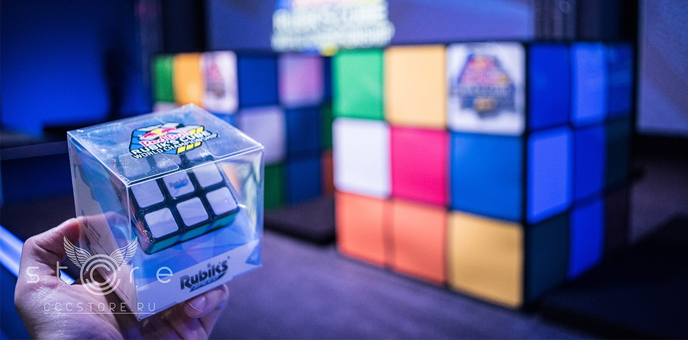

Кубик Рубіка
Дуже популярна та цікава механічна головоломка

Найкращий Результат
Світовий Рекорд Становить 3.28 Секунди

Турніри
Навіть по цій головоломці є Турніри

Інші Куби
Є дуже багато інших кубів,найбільший є 19х19

Факти
Житель Бразилії Габріель Перейра Кампанья зібрав кубик Рубіка ногами за 25,14 секунди.